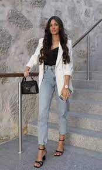
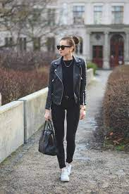
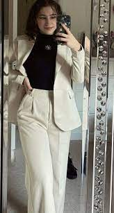
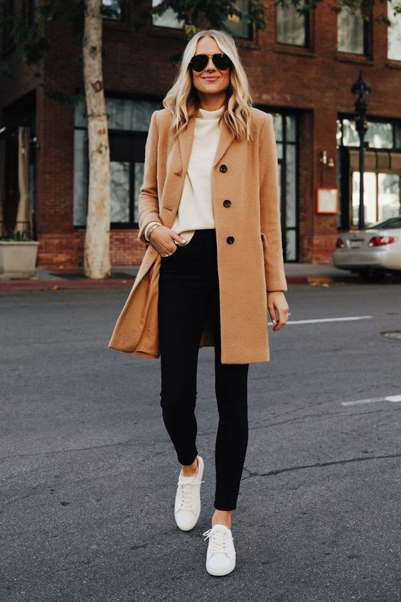
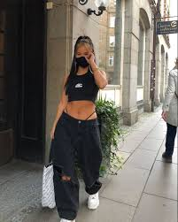
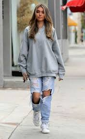

👗 Look Casual
El look casual en 2025 se centra en prendas cómodas pero modernas. Jeans rectos, camisetas oversized y zapatillas minimalistas se combinan para un estilo relajado y versátil.
 👠 Look Elegante
La elegancia se redefine con colores neutros, telas satinadas y cortes clásicos. Los vestidos midi, los blazers entallados y los tacones finos son piezas esenciales.
 🧢 Look Urbano
El estilo urbano sigue fuerte en 2025: sudaderas con capucha, joggers, zapatillas chunky y accesorios llamativos como gorras y cadenas completan el outfit.
 